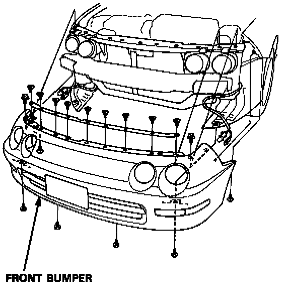
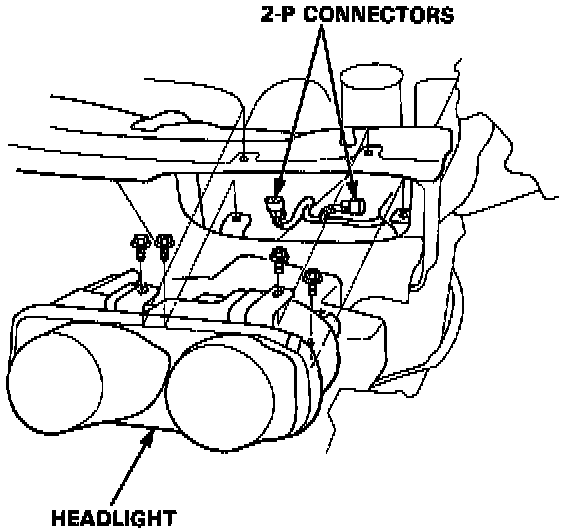
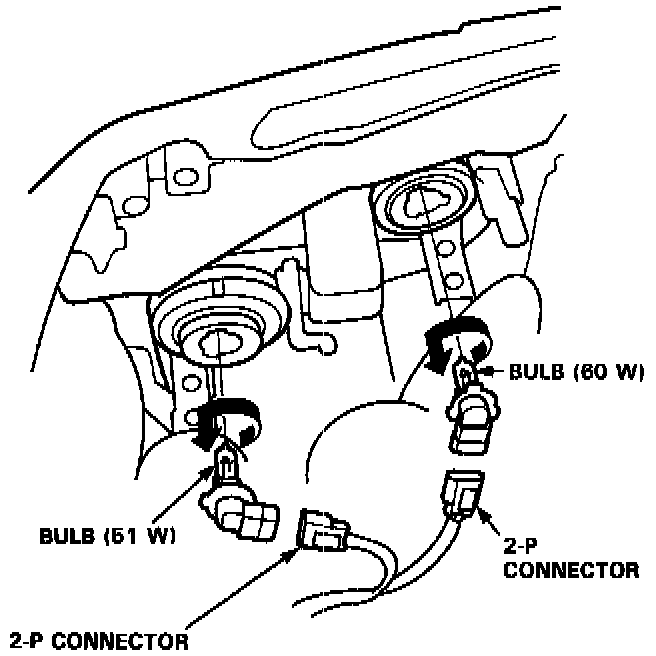

Headlamp Bulb: Service and Repair
HEADLIGHT / REPLACEMENT

1. Remove the front bumper.

2. Remove the mounting bolts, then pull out the head-light, and disconnect the connectors from it.
3. After replacement, the horizontal and vertical aiming must be checked using conventional methods. Use the aiming charts Adjustments.
BULB / REPLACEMENT
CAUTION:
- Halogen headlights can become very hot in use; do not touch them or the attaching hardware immediately after they have been turned off.
- Do not try to replace or clean the headlights with the lights on.

1. Disconnect the 2-P connector(s) from the headlight.
2. Turn the bulb(s) counterclockwise and remove the bulb(s).